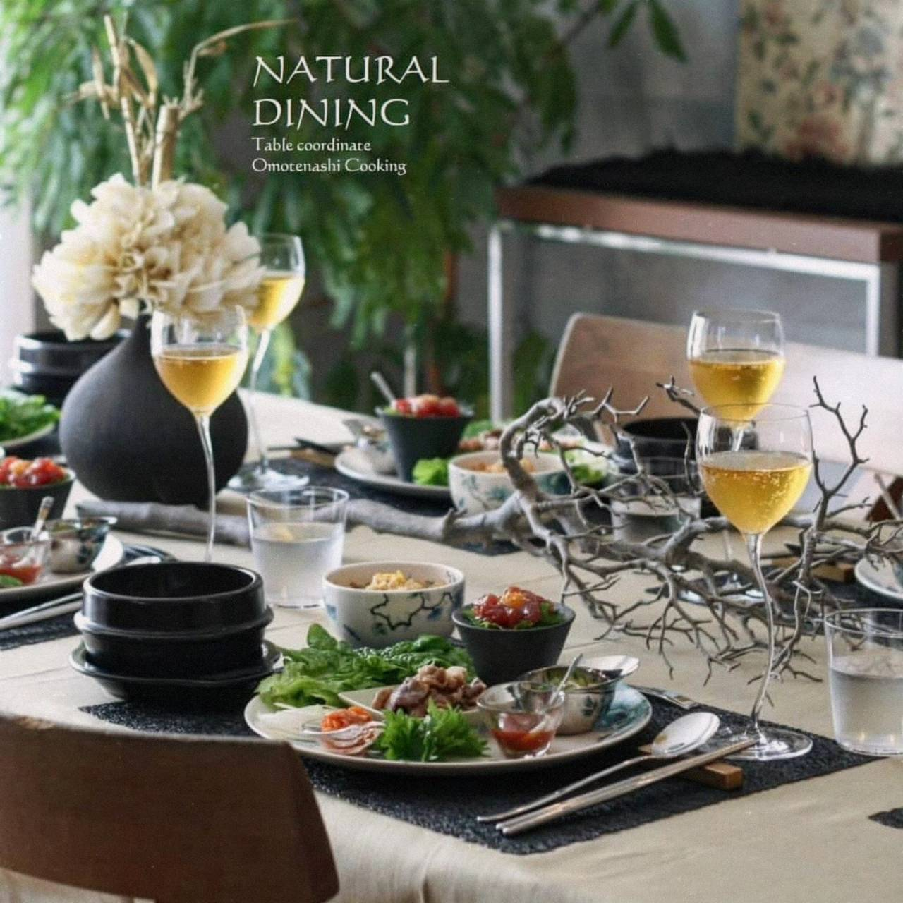
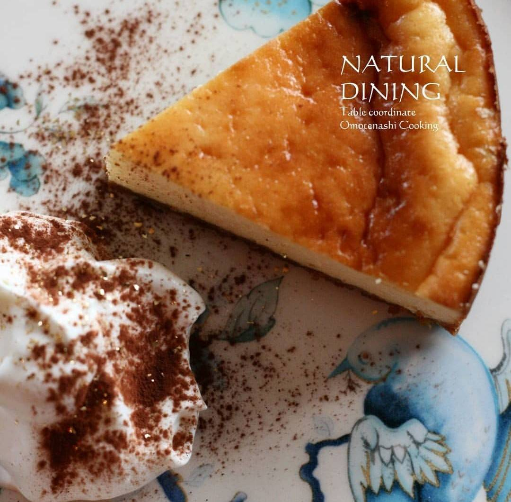

ようこそ
約3ヶ月ごとにテーマを変え、季節に合わせたテーブルコーディネートと家庭で楽しめるおもてなし料理をご紹介しています。 和・洋・中・エスニック・アジアンなど幅広いジャンルを取り入れながら、暮らしの延長で気軽に楽しめるおもてなしをご提案しています。


テーブルコーディネート＆
おもてなし料理教室


テーマ「韓流スタイルを楽しむ秋の大人パーティー」
お盆期間が過ぎましたが相変わらず残暑厳しい毎日、 いかがお過ごしでしょうか😌
牡丹と燕が描かれたWEDGWOODのブルーバードを使って
オリエンタルな韓流テーブル。
そこにぴったりな韓国風のおもてなし料理をご用意しました。
こちらは2019年1〜4月に開催したリクエストレッスンです。
既にご受講済みの方は9月はお休みとなり、
次回はクリスマスレッスンをご案内させていただきます。
メニュー
（食材は仕入れ状況により変更することがあります）
参加費：12,000円（税込）・当日お支払い
時間：10時30分から約3時間
（内容により前後します）
持ち物：エプロン、タオル、筆記用具
9月2, 3, 5, 6, 8, 9, 11, 14, 17, 18, 20, 21, 25, 26, 28, 30
10月1
調整のため、お申し込み締め切りは8月23日です🙏
（締切前に定員になりましたら、募集を終了させていただきます）
ご希望の場合は、①お名前 ②参加人数 ③希望日（できるだけ複数）
④駐車場の要否 をお知らせください。
駐車場要とのご記載がない場合、後日確保できないことがございます。
お振込み後にレジュメをお送りします。 ただし、他の日程に空きがあり振替できた場合はキャンセル料はいただきません😌
季節先取りでシックに秋らしく。
韓流おもてなしを一緒に楽しみませんか🇰🇷
ではお会いできますこと、楽しみにしております😊
お気軽にお問い合わせください。 初めての方も大歓迎です。
メールでのお問い合わせはこちら
naturaldining@yahoo.co.jp
約3ヶ月ごとにテーマを変え、季節に合わせたテーブルコーディネートと家庭で楽しめるおもてなし料理をご紹介しています。 和・洋・中・エスニック・アジアンなど幅広いジャンルを取り入れながら、暮らしの延長で気軽に楽しめるおもてなしをご提案しています。
✔ テーブルコーディネートを学んでみたい方
✔ 身近な食材で気軽に作れるおもてなし料理を知りたい方
✔ 家庭でのおもてなしの段取りを学びたい方
✔ インテリアや食器・テーブルウェアが好きな方
✔ 少人数でゆったり学びたい方
✔ 初心者でも安心して参加できる教室を探している方
約3ヶ月ごとにテーマを変え、 季節を感じるテーブルコーディネートと 家庭で再現しやすいおもてなし料理をご紹介しています。
毎回完結型レッスンなので、 初めての方でもお好きなテーマから ご参加いただけます。
テーブルコーディネートは 何もないテーブルから完成までを デモンストレーション形式でご覧いただきます。
料理も全工程をデモンストレーション形式で行いますので、 初心者の方でも安心して学べます。
盛り付けは皆さまで行い、 完成後は美しいテーブルで ゆったりランチタイムをお楽しみください。
2025年12月で教室20周年。 これまでたくさんの皆さまと 素敵な時間を過ごしてまいりました。
10:30〜13:30
教室オープン 10:15
10:15〜10:25の間に お越しください。
終了時間は多少前後しますので、 ご予定がある方は事前にお知らせください。
阪急長岡天神駅より徒歩5分
JR長岡京駅より徒歩20分 （タクシー約1メーター）
2台ございます。 お申し込み時にお知らせください。
・エプロン
・筆記用具
募集中・開催中のレッスンをご参照ください。
ウェルカムティーを飲みながら、 今回のテーブルコーディネートや レシピをご説明します。
何もないテーブルから 華やかなテーブルが出来上がっていく様子は ワクワク見応え十分です。
スーパーで入手できる食材、 シンプルな手順で 家庭でも作りやすい おもてなし料理をご提案しています。
便利な調理グッズや 楽しいアイデアも たくさんご紹介します。
皆さまで華やかなテーブルを 完成させます。
インスタ映えする 華やかな写真や動画を 自由に撮影してください。
完成したお料理を囲みながら ゆったりとお召し上がりください。
お片付けはありませんので どうぞごゆっくり お寛ぎください。


奈良女子大学生活環境学部食物栄養学科卒業。
もともと料理やおもてなしが好きだったことが高じて、 趣味で料理教室やスクールに通いながら独学でも学びを重ね、 少しずつ知識と腕を磨いてきました。 学んだことを自分なりの形にして人にお伝えしたいという思いが強くなり、 自らも教室を主宰するようになりました。
結婚後、おもてなしの楽しさを多くの方へ伝えたいという思いから 「テーブルコーディネート＆おもてなし料理教室 NATURAL DINING」をスタート。
京都たん熊北店にて15年以上京料理を学び、 和・洋・中・エスニックなど幅広いジャンルのおもてなし料理をご紹介しています。
2025年12月で教室20周年。 少人数ならではのアットホームな雰囲気で、 初めての方にも安心して楽しんでいただけるレッスンを心掛けています。
これまでの季節ごとのレッスンをご紹介しています。 テーブルコーディネートやお料理の雰囲気をぜひご覧ください。